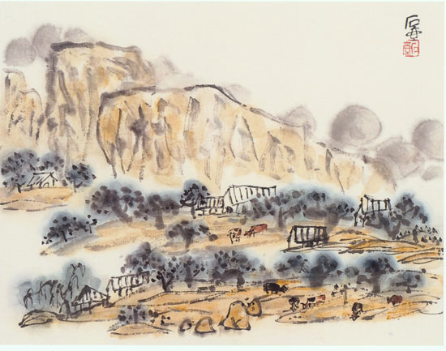
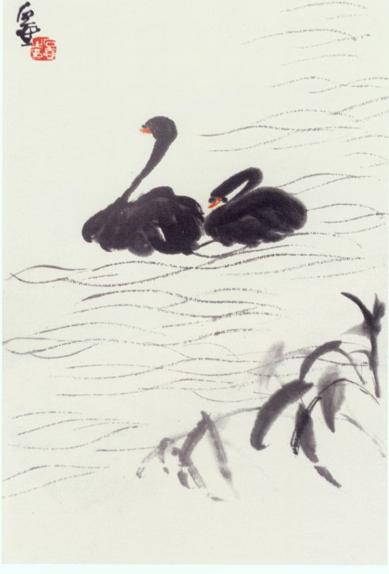
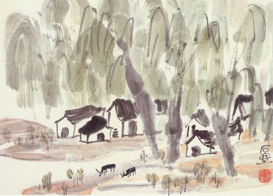
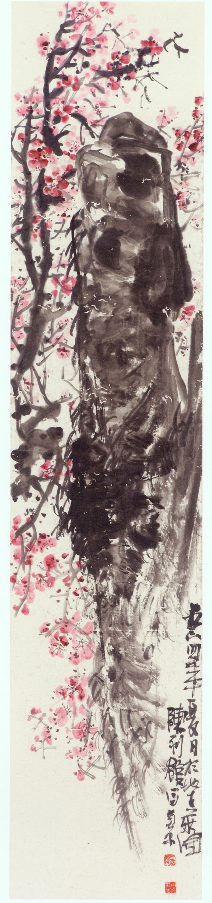
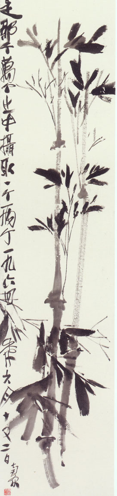

陈子庄绘画作品选
陈子庄（1913—1976）号兰园、下里巴人、石壶等，重庆永川人。著名国画大师。
陈子庄自幼受其父熏陶，酷爱绘画。齐白石、黄宾虹入川，得以相晤，切磋画艺，领受教益。1955年受聘为四川省文史馆馆员、国画组组长，长期研究中国传统书画理论，努力探索，在创新实践中，逐步形成了自己独特的风格。他提出“因景生意、因意立法”，即“意度”的主张，在艺术创造上大胆运用夸张、变形、拟人化等手法，使出于笔下的形象，透露着内质的美和真。1976年逝世，享年63岁。生前曾任政协四川省第三届委员会委员，著有《石壶论画语要》、《石壶探篆》等。
1988年3月，中国美术馆、中国美术家协会、四川省美术家协会等共同在北京举办《陈子庄遗作展》，吴作人、启功、吴冠中等对展览作了高度评价。陈子庄已编入《中国美术家大辞典》、《近百年美术史册》和文化部出版的《中国五十年美术》，被誉为“中国的梵高”。

春至蜀山

黑天鹅

柳邨散牧

红梅图 墨竹图